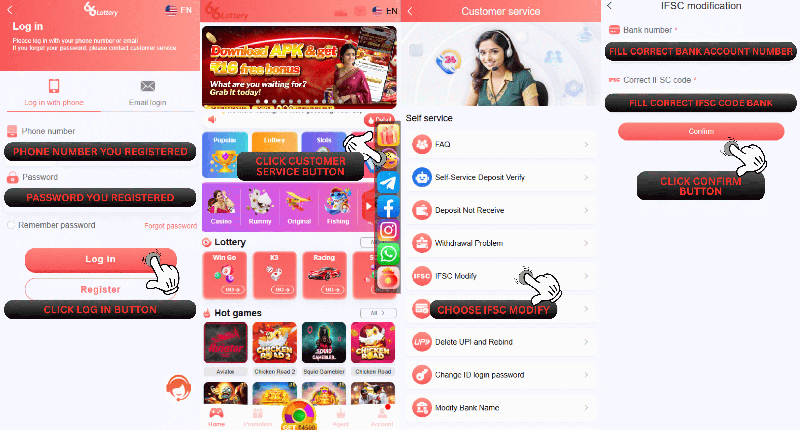

IFSC परिवर्तन
प्रश्न: यदि मैं स्वयं-सेवा केंद्र 66 Lottery पर IFSC संशोधन सबमिट करता हूँ, तो मेरी बाउंड बैंक जानकारी का क्या होगा?
उत्तर: हमारे विशेषज्ञ आपके द्वारा दी गई जानकारी की जाँच और सत्यापन करेंगे और यदि सभी जानकारी सही है। हम आपके आईडी खाते में आपके बाउंड बैंक को हटा देंगे और आप सही बैंक जानकारी को फिर से बाइंड कर पाएँगे।
प्रश्न: मैं स्वयं सेवा केंद्र 66 Lottery पर IFSC संशोधन के बारे में समस्या कैसे प्रस्तुत कर सकता हूं?
उत्तर: स्वयं-सेवा केंद्र 66 Lottery पर IFSC संशोधन जमा करने के लिए, कृपया इस चरण का पालन करें
1. आपको इस लिंक https://www.66lottery.vip/ का उपयोग करना होगा
2. लिंक डालने के बाद नोटिफिकेशन को बंद कर दें
3. समस्या का चयन करें और IFSC संशोधन चुनें
4. अपना 66 Lottery ID अकाउंट भरें
5. पासबुक/बैंक स्टेटमेंट से सही IFSC कोड बैंक भरें
6. मुद्दा सबमिट करें

प्रश्न: IFSC संशोधन पूरा होने के बाद मुझे क्या करना होगा?
उत्तर: IFSC संशोधन पूरा होने के बाद, आपकी बाउंड बैंक जानकारी हटा दी जाएगी, फिर आप सही बैंक को फिर से बाउंड कर सकते हैं और पिछली बैंक जानकारी में सुधार कर सकते हैं जिसे आपने गलती से गलत IFSC में भर दिया था, इसके लिए “विदड्रॉ” पेज पर जाएँ और नीचे दिए गए चरणों का पालन करें:
1. बैंक खाता जोड़ें पर क्लिक करें
2. वह बैंक चुनें जिसके साथ आप रजिस्टर करना चाहते हैं
3. सभी आवश्यक जानकारी सही ढंग से भरें (आपका पूरा नाम, बैंक खाता संख्या, सक्रिय फ़ोन नंबर, ईमेल पता और IFSC कोड)
4. सेव पर क्लिक करें और SMS सत्यापन मेनू दिखाई देगा
5. भेजें बटन पर क्लिक करें
6. सही OTP कोड भरें
7. पुष्टि बटन जोड़ें पर क्लिक करें

प्रश्न: मैं निकासी के लिए उपयोग किए जाने वाले बैंक का IFSC कोड कैसे ढूंढ सकता हूं?
उत्तर: आप जिस बैंक का उपयोग करते हैं उसका IFSC कोड पासबुक बैंक/बैंक स्टेटमेंट पीडीएफ से पा सकते हैं
हम आपको पासबुक बैंक का उदाहरण दिखाएंगे और फोटो पर IFSC कोड ढूंढेंगे

स्थिति संबंधी समस्या
प्रश्न: मैं स्वयं-सेवा केंद्र 66 Lottery पर अपने स्टेटस इश्यू IFSC संशोधन की जांच कैसे करूं?
उत्तर: आप चेक इश्यू स्टेटस दबाकर स्टेटस इश्यू की जांच कर सकते हैं, फिर अपना 66 Lottery आईडी खाता भरें और IFSC संशोधन इश्यू का चयन करें, अंत में खोजने के लिए क्लिक करें और यह आपके इश्यू की स्थिति दिखाएगा
सफलता की स्थिति
प्रश्न: मैं पहले से ही जाँच कर रहा हूँ और यहाँ स्थिति पहले से ही सफल है और एक नोट पास - सफलता "बैंक डेटा हटा दिया गया है, कृपया सही बैंक को फिर से बाँधें"" इसका क्या मतलब है?
उत्तर: इसका मतलब है कि हमारा डेटा विभाग पहले से ही आपके बैंक डेटा खाते की जाँच कर रहा है जो 66 Lottery खाते से जुड़ा है और सफलतापूर्वक आपके बंधे हुए बैंक को हटा दिया है, इसलिए हम आपको सही बैंक जानकारी के लिए अपने बैंक को फिर से बाँधने का सुझाव देते हैं
प्रश्न: मैंने यहाँ जाँच की है कि "बैंक डेटा हटा दिया गया है, कृपया सही बैंक को फिर से बाँधें" के अलावा कुछ पास - सफलता है, क्या आप मुझे बता सकते हैं कि नोट का क्या मतलब है?
उत्तर: ठीक है हम इसे यहाँ समझाने में मदद करेंगे कृपया नीचे दिए गए स्पष्टीकरण को पढ़ें:
1. पास - सफलता "वापसी फिर से सबमिट करें, IFSC कोड पहले से ही सही है": इसका मतलब है कि आपके IFSC कोड बैंक ने बैंक डेटा 66 Lottery खाते पर सबमिट किया है और आपको क्या करने की ज़रूरत है फिर से नई निकासी फिर से सबमिट करने का प्रयास करें
2. पास - सफलता "IFSC कोड सही है, बैंक नाम परिवर्तन के लिए फिर से सबमिट करें": इसका मतलब है कि IFSC कोड बैंक पहले से ही सही है और केवल आपके द्वारा डाला गया बैंक नाम गलत है, इसके लिए कभी-कभी समस्याएँ होती हैं क्योंकि कुछ बैंक बड़े बैंक के साथ विलय कर रहे हैं या सहयोग कर रहे हैं बदलाव की जरूरत होगी
उदाहरण के लिए:
1. इलाहाबाद बैंक का भारतीय बैंक में विलय
2. स्टेट ऑफ बीकानेर एंड जयपुर बैंक का भारतीय स्टेट बैंक के साथ सहयोग
स्थिति अस्वीकार करें
प्रश्न: स्टेटस रिजेक्ट के बारे में क्या, मुझे यह जानना होगा कि क्या मेरा IFSC संशोधन मुद्दा 66 Lottery डेटा विभाग द्वारा अस्वीकार कर दिया गया है?
उत्तर: ठीक है, निश्चिंत रहें, हम आपको समझाने में मदद करेंगे, कुछ नोट अस्वीकृति हैं जिन्हें आपको जानना आवश्यक है, हम नीचे इस पर स्पष्टीकरण देंगे:
1. अस्वीकार "आवश्यकता डेटा गलत है, सही IFSC पुनः सबमिट करें": इसका मतलब है कि आपको पासबुक बैंक/बैंक स्टेटमेंट से सही IFSC कोड बैंक के साथ फिर से वही मुद्दा फिर से सबमिट करना होगा क्योंकि हमारे डेटा विभाग को आपके द्वारा सबमिट किया गया IFSC कोड नहीं मिला है
2. अस्वीकार "आईडी खाता गलत है, सही आईडी के साथ पुनः सबमिट करें": इसका मतलब है कि आपका IFSC कोड 66 Lottery आईडी खाते पर आपके द्वारा सबमिट किए गए बैंक से मेल नहीं खाता है
3. अस्वीकार "UCO बैंक अनुपलब्ध है, बैंक समस्या को हटाने के लिए पुनः सबमिट करें": यदि आपने UCO / SUCO बैंक का उपयोग करके बैंक डेटा बाध्य किया है, तो 66 Lottery डेटा विभाग स्वचालित रूप से अस्वीकार कर देगा और आपको निकासी के लिए बैंक डेटा बदलने के लिए सूचित करेगा, आपको बस स्वयं-सेवा केंद्र 66 Lottery पर सबमिट करना होगा और समस्या बैंक खाता हटाएं का चयन करना होगा